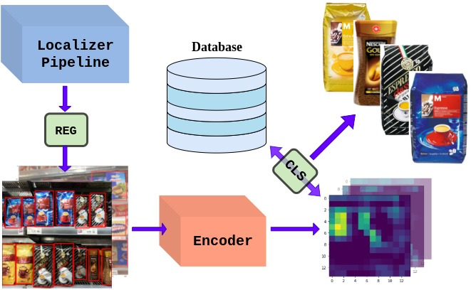
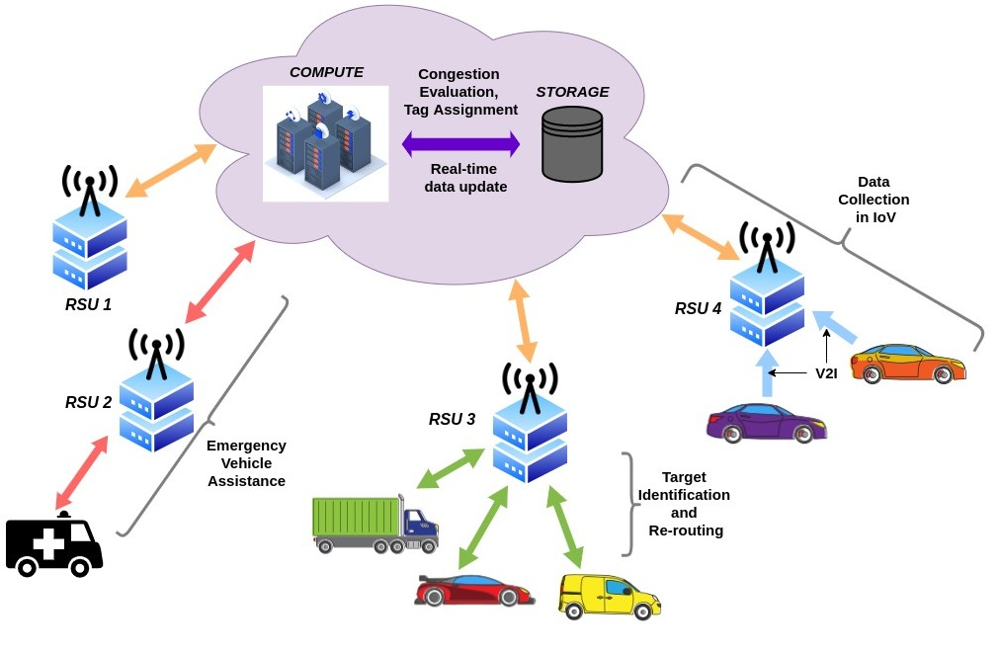
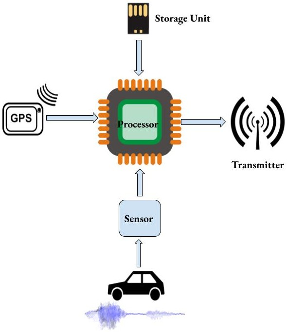

|
Ankit Sinha
Hi 👋, thanks for visiting my profile! I am a Machine Learning (MLOps) Engineer with Oracle Health & AI Services.
Currently, we are on a mission to integrate various Intelligent features into an in-house Dataset Labeling tool.
Before joining Oracle back in July 2022, I graduated with a BTech in Computer Science and Engineering from the Indian Institute of Technology (BHU), Varanasi. During my undergraduate studies, I closely collaborated with
Dr Pratik Chattopadhyay and my BTech supervisor Dr Prasenjit Chanak on several academic projects.
Email |
CV |
LinkedIn |
Github |
Substack |
Google Scholar
|
|
|
News
11.04.2023 Do take a look at my blog posts on substack . I like documenting my experiences with technology be it engineering or research!
28.06.2022 Joined Oracle Healthcare and AI Services as an MTS (IC-2).
17.04.2021 Represented IIT (BHU) NLP team at Inter-IIT Tech Meet 9.0 and won Silver in the Automatic Headline and Sentiment Generation event.
|
|
Research
My current research interests are at the intersection of Machine Learning, Computer Vision and Robotics. I am mostly excited about topics like SLAM,
6D Pose Estimation, 3D Geometry problems, etc. However, in my past I have extensively worked in the domain of Natural Language Processing. Below, you can find some of my previous projects that have led to publications and patents.
|
|

|
An Effective Deep Learning Framework for Product Recognition on Rack Shelves in Retail Stores
Ankit Sinha,
Soham Banerjee,
Dr Pratik Chattopadhyay
International Journal of Computer and Information Engineering, 2022
[Paper]
Computer Vision has immense applications in the Retail Space - inventory monitoring, surveillance activities, planogram compliance etc.
However, the pace with which items arrive and phase-out makes it impossible to deploy an end-to-end model. We implement
a two-stage pipeline consisting of a Faster-RCNN-FPN localizer and a ResNet-18 embedder to address this challenge.
|
|

|
An Intelligent Traffic Management Scheme for Swift Movement of Emergency Vehicles in IoT-enabled Transportation System
Ankit Sinha,
Prasenjit Chanak
Transactions on Intelligent Transportation Systems (T-ITS), (*review)
drive link
When an emergency vehicle is on its way, usually the neighboring vehicles cooperate and provide it with a safe passage. What if it gets stuck
in a long queue of vehicles which cannot be diffused immediately? So we propose a traffic management
strategy that prioritises emergency vehicles but ensures the least inconvenience caused to general vehicles.
|
|

|
An IoT-enabled low cost and portable real-time Traffic Congestion device for Smart Transportation
Indian Patent Application, 202111039295
Prasenjit Chanak,
Ankit Sinha
Real-time traffic congestion monitoring is indispensible for efficient traffic management. Currently, camera-based solutions are the most widely accepted which is quite expensive. Instead, we propose a low-cost and highly portable device
which can detect the traffic flow from the seismic waves generated by vehicular movement.
|
|
{kind=link}